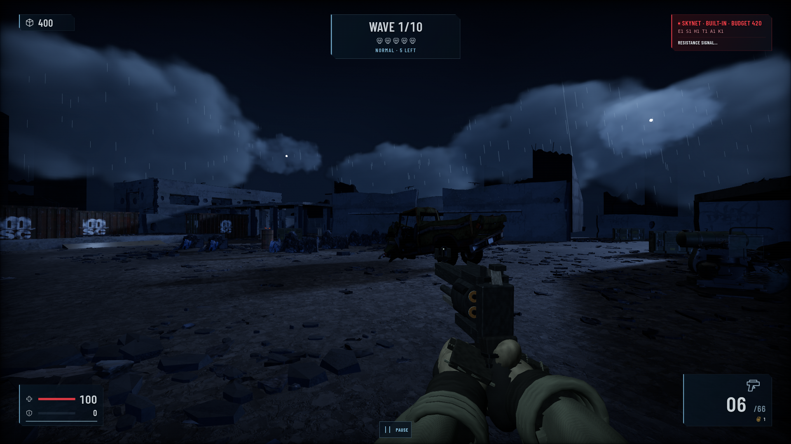
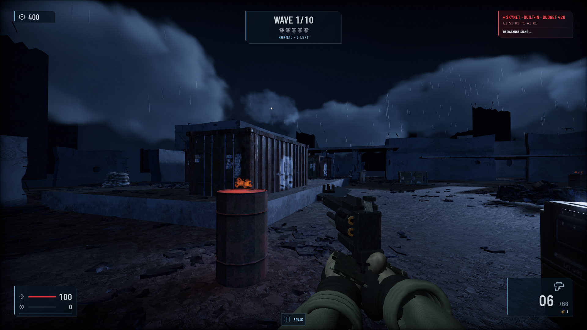
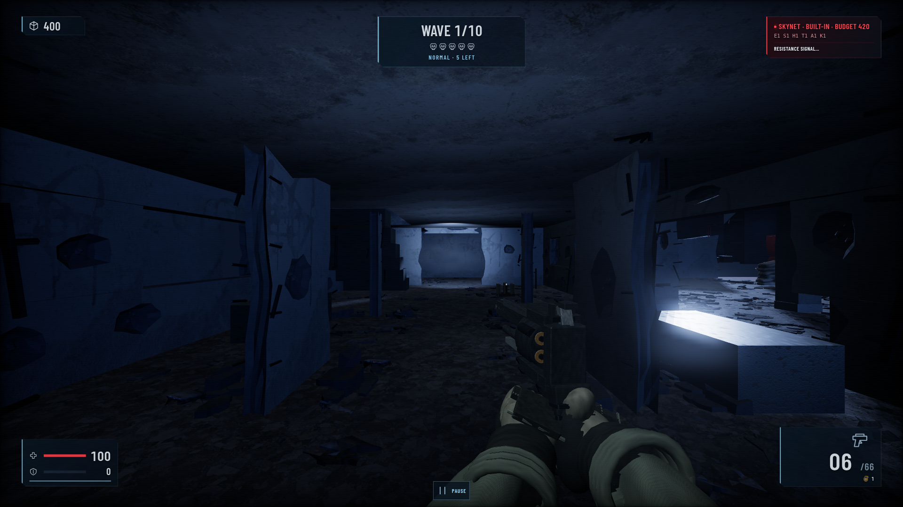
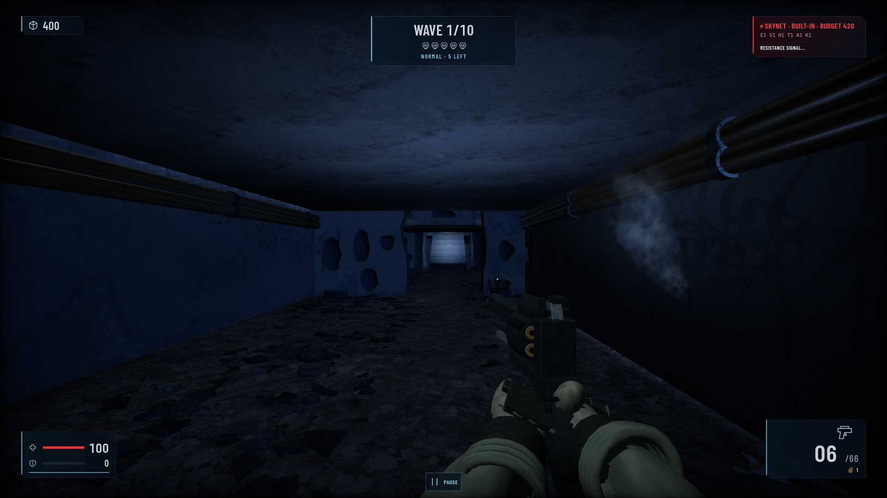
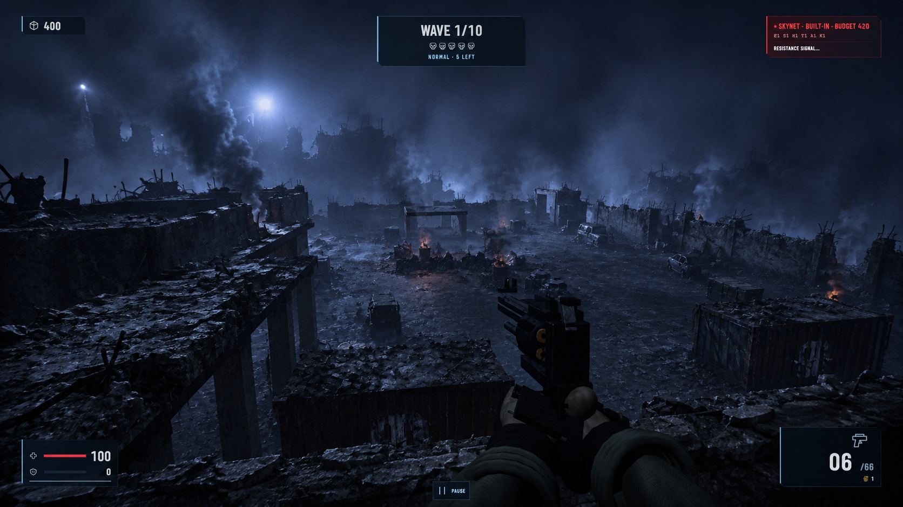
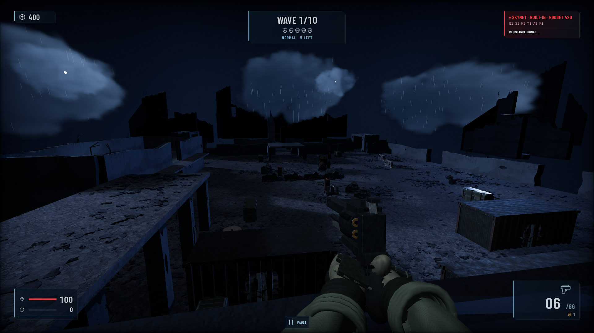

BeforeNew targetLatest progress
01-courtyard



02-cargo



03-barracks



04-service



05-rooftop



DIAGNOSTIC / Needs revision. No scene approval.
Capture date range (UTC): 2026-09-13T23:40:01+00:00 — 2026-09-13T23:42:00+00:00
Source PNG file modification times; capture manifest does not record acquisition timestamps.
Diagnostic base SHA (plus routed owner revisions below): 952bc3de8590ccf7939fb3005744a60d7b0917fd
Capture source: v2-combined-r4-pilot-08
Gallery built: 2026-09-13T23:52:28+00:00
DIAGNOSTIC / Needs revision. Browser-routed module overrides; this is not a clean integrated scene commit. Independent review pending.
{
"base_commit": "952bc3de8590ccf7939fb3005744a60d7b0917fd",
"mode": "Diagnostic browser module overrides; Actual PlayerView; first-wave start held still; default map state; fixed presentation tick; no enemies advanced",
"owners": [
{
"owner": "architecture",
"commit": "0cee1d6c647bf6bf13bd81c78e88ea7cb50c81d9",
"sourceFiles": {
"assets/v2/architecture/LICENSE.txt": "9000ef79bbd4e1ad058ccb5c88750520c99fd9b717406a33863cf102af59dff5",
"assets/v2/architecture/rubble-patches.json": "0d41a1f506c812ce9a1ee073c6f06c93537f40c081db38d6aaf8505b072e7077",
"lib/view/v2/architecture-bake.js": "7d9b0173dd9475c3a130b41f079848bc48e7f580c0898a1c3c2123eb82b30be4",
"lib/view/v2/architecture-layout.js": "eec54e2bb4be7b6987c9424475d51ad83484264a3cc9831417416b26e73f16c4",
"lib/view/v2/architecture-morphology.js": "7a26c5d450d6e7b911a7a051dc6a50e4d00e15dbfb1b09b6301c390b12b07c05",
"lib/view/v2/architecture-rubble.js": "11ae8e6cd9905a1237e424b940327c2774da201063f60175044f190a097f1766",
"lib/view/v2/architecture-shells.js": "4a3b50121f8381621fc2284e78cb337fd349d76dc72033fe530086f05878c414",
"lib/view/v2/architecture.js": "2322a84ec9bf162b65709770843a47e2274935fa424a7425e1aedead7ca895ba"
}
},
{
"owner": "ground",
"commit": "cfabfae786dbfaba17af4dde79ceb6b30ffb3dbf",
"sourceFiles": {
"assets/v2/ground/coverage.json": "8f472a147602206517bae5e529f919b962ca0c48bbf08bb911d60311e0c5e469",
"assets/v2/ground/fragments.json": "734bf57d8fb4917954caf237686f601eda91b020628b683647d28b32b3869b87",
"lib/view/v2/ground-layout.js": "e1bef0bf98ab1b96a691b1a4d78039e12f0b3f14d027d96124b1c6da7340fcdc",
"lib/view/v2/ground.js": "f209f3dc64e08b3e3c0a8c97bd649493b95a9eced90dc0fc7f3d0cc0aff33682"
}
},
{
"owner": "materials",
"commit": "1263b2e427ece3e56382d5ddbccfa6949a93829d",
"sourceFiles": {
"assets/v2/materials/concrete-albedo.jpg": "136999c1feaf47cdfaec91e492522d7ceea653bba61ab2d903772c3025b60d40",
"assets/v2/materials/concrete-surface.png": "82c155c2e2c5b268cc32bcf4b994464e4564efca4da901c6a2a6cd1b4661fa57",
"assets/v2/materials/ground-albedo.jpg": "bb7888963f2134c5025bf056111cacb0d91b20af1837418a59dd2874c1d15682",
"assets/v2/materials/ground-surface.png": "412fcc8911ba038340f22916e8dbd0582c91d2ce77374f95dd83ba3626a91e78",
"assets/v2/materials/photo-leaking-LICENSE.txt": "799101068c143f87455bbda9e9482dcadd1b17cef6f06bff01850c8b4ebaa456",
"assets/v2/materials/photo-provenance.json": "950b1ed091f365f27d0b7a88a660cbf7311dea7f6b7c81c4fb9972f698dac3e8",
"assets/v2/materials/photo-soffit-albedo.jpg": "a0b064e43c9c485ad28ac366bd413d9360aba9094c1afa33ce33ca3647e2e202",
"assets/v2/materials/photo-soffit-normal.png": "bc458f1a141363a1fe963933ef6d2b84214d5a9b3fb7db4b2914c05697bdab93",
"assets/v2/materials/photo-soffit-orm.png": "54d9021f5178eef258dfda6eb7edfb4f821a4f0c72f2b0e06e7f793ebff441f4",
"assets/v2/materials/photo-soffit-provenance.json": "8c3d8337bab706c50ce94052caa5d3c009079dce746ba0fa0f3592c1fed6bbbd",
"assets/v2/materials/photo-worn-LICENSE.txt": "4358adca4c173de5717482607b3cd0e88ff33746bf97fb09be1ee98d0f658ec2",
"assets/v2/materials/photo-worn-albedo.jpg": "a7d583a3b1c5608fc04cf7d425ff6abeb6d82de8d62ccb1446af5f95ccfc86f1",
"assets/v2/materials/photo-worn-normal.png": "8de9fa5fa13f7520367129c796c55181c17ccd7e2d7f4bbdb30a8fba6482e392",
"assets/v2/materials/photo-worn-orm.png": "cf82a4dbd211d6b67967d43760a6cde27bd8eb74aa877de4b8fb96653a411894",
"assets/v2/materials/provenance.json": "b2a2268d7c338df3ce44baf88eed76119f6d683c1f361275e91b602fc0455cb5",
"assets/v2/materials/substrate-rubble-LICENSE.txt": "0d1d27db6d24bfb3a02824678c5f2d01595aea03b9c20f50f4be10bfb571fd56",
"assets/v2/materials/substrate-rubble-albedo.jpg": "8d3d674936965e0ea6463b319109b12b2668370e1817dc5a54f4ebc4d025f7c1",
"assets/v2/materials/substrate-rubble-normal.png": "e55623a2e6101067faad327f5d5c6531c503e77bceb9cde32e2545d7ba0a318f",
"assets/v2/materials/substrate-rubble-orm.png": "79f6551d9653daddd9c51d93f169aede3833834f5f1d8a47756e1832bbd7e11d",
"assets/v2/materials/substrate-rubble-provenance.json": "189facc917f32976a038db640ce467cde1d0844234139b2a444fe4e2ede0af4b",
"lib/view/v2/materials-shader.js": "1bcb6beaa6cbaae66d78154503bedd89b92d4fc9006b0d922850ab290b0d784f",
"lib/view/v2/materials-substrate.js": "cd239f692a85a9bdfeba869a8c8cfa56e65a4ec4659f6ee969c836fb94c9b86f",
"lib/view/v2/materials-weathering.js": "e6d6ccf26a759cbfde6ff15cd4429cf1c9043aa71b87f00ed20b814d7f969838",
"lib/view/v2/materials.js": "a3470d36219c87e297700ca6377d65a8cc3f2dc8aedf85454354e0abcf264537"
}
},
{
"owner": "lighting",
"commit": "1baf144144e4a57a59300485e215e77d560bb635",
"sourceFiles": {
"lib/view/v2/lighting-noise.js": "db024156f990f110ca6b96f2266f5f64c4f090ca55b8fb6ae9f9355cfe403bf2",
"lib/view/v2/lighting.js": "1e03c2ef67c4900ee0296fae119285e414b14967986a91c3874d93ea0ee698a3"
}
}
],
"base_source_files": {
"assets/main.scene.gltf": "cc912950518e6712a00d3e735a7dca54b1ede6fdd54c88c9950347b9d86a3287",
"assets/models/map/rubble-1x1p5x12-zh655b/rubble-1x1p5x12-zh655b.gltf": "60d4db6cbdfce6270c088979ccbde152130a6cd7a0f7ac16a1ccafba5e205b63",
"assets/v2/effects/particles.png": "c51d4f212ef0be4336b9321f7bc17416679bbe7f925a46d7d8b6ad602ede8fc9",
"assets/v2/effects/provenance.json": "2ec3364d98fa49c2aa8537709ea31a18bd63d658352a2a17536bb9735383750f",
"assets/v2/materials/concrete-albedo.jpg": "136999c1feaf47cdfaec91e492522d7ceea653bba61ab2d903772c3025b60d40",
"assets/v2/materials/concrete-surface.png": "82c155c2e2c5b268cc32bcf4b994464e4564efca4da901c6a2a6cd1b4661fa57",
"assets/v2/materials/ground-albedo.jpg": "bb7888963f2134c5025bf056111cacb0d91b20af1837418a59dd2874c1d15682",
"assets/v2/materials/ground-surface.png": "412fcc8911ba038340f22916e8dbd0582c91d2ce77374f95dd83ba3626a91e78",
"assets/v2/materials/photo-leaking-LICENSE.txt": "799101068c143f87455bbda9e9482dcadd1b17cef6f06bff01850c8b4ebaa456",
"assets/v2/materials/photo-provenance.json": "950b1ed091f365f27d0b7a88a660cbf7311dea7f6b7c81c4fb9972f698dac3e8",
"assets/v2/materials/photo-worn-LICENSE.txt": "4358adca4c173de5717482607b3cd0e88ff33746bf97fb09be1ee98d0f658ec2",
"assets/v2/materials/photo-worn-albedo.jpg": "a7d583a3b1c5608fc04cf7d425ff6abeb6d82de8d62ccb1446af5f95ccfc86f1",
"assets/v2/materials/photo-worn-normal.png": "8de9fa5fa13f7520367129c796c55181c17ccd7e2d7f4bbdb30a8fba6482e392",
"assets/v2/materials/photo-worn-orm.png": "cf82a4dbd211d6b67967d43760a6cde27bd8eb74aa877de4b8fb96653a411894",
"assets/v2/materials/provenance.json": "b2a2268d7c338df3ce44baf88eed76119f6d683c1f361275e91b602fc0455cb5",
"generators/v2-preview.js": "c99b2b88b1a7fa3b19e80042472edc3e9fc330fcd029fd5e8d61ce2dc66970c3",
"lib/view/map-batching.js": "b9ae35ad2a1600c2192bc1355a4ec502d3b62373ccea9f857931d6adb759ff69",
"lib/view/map.js": "c4dbc936822623acbd0ccc2e589e26edb8cb4e161fe9e9eba06d7684e9a20aa4",
"lib/view/v2/architecture-layout.js": "eec54e2bb4be7b6987c9424475d51ad83484264a3cc9831417416b26e73f16c4",
"lib/view/v2/architecture.js": "1c39c5cd4597feffe4ffc455b69d8e3798c069ae7998a6f98c2424e7b346ebf3",
"lib/view/v2/effects-simulation.js": "6b00ad123c0209e823dc1f01d431242eadbf5b274973b268d6b89f8590ddc60c",
"lib/view/v2/effects-textures.js": "e84f88eb64206681207eb3d7ed4aaa07de15e8cd04b17a9cd1d2be38f875aed7",
"lib/view/v2/effects.js": "ae9601ca4f3ee4a69a07b1bb4b81158ba1caec167c56879d7cda14ae58385257",
"lib/view/v2/lighting-noise.js": "f9d6e4b5e46687667d9cffd6bc2df3ca0dff1fea07c4a372786ba4e761ec9d2b",
"lib/view/v2/lighting.js": "61214668919a2c027cb6b48a86411b642234571e376423567eb77b013f66d885",
"lib/view/v2/materials-shader.js": "edfb0fad4c8c6f8c2ef34f131f80aa3a3fd3c05d6032abf19067b89dd1709728",
"lib/view/v2/materials-weathering.js": "e6d6ccf26a759cbfde6ff15cd4429cf1c9043aa71b87f00ed20b814d7f969838",
"lib/view/v2/materials.js": "d3f3cdbe7e342769ebe9cf28125ca50e1be226ed2c5d687f22b358eff55f637e",
"main.js": "bba9791a2e6c6851561b9e80b05d2a5d628e7c7135fe816da0b51cda9d280af6",
"package.json": "53bba145dd7cfe3eabf97a2f647235748727fb6a086483e64b0e6fd4612b76ca"
},
"harness_sources": {
"tools/capture-scene-targets.mjs": "9dba34947bc15f856f0210dc3d932cfa543794187d652e3359d4ee945f7f7021",
"tools/v2/capture-browser.mjs": "cd4b99b8b610eff03de9b23ced57f39987e81a1033873e7b9fa0163ceccc683f",
"tools/v2/capture-gpu-timing.mjs": "eb7db58b6d30c0b4d548ba19e1634e6606cd774e40890c17533b63361bea5f4a",
"tools/v2/capture-pilot-overrides.mjs": "c4543fd882cbd97fd704bfa9ae288d08d29c981025bded6284bb78a2809ac361"
}
}Before is the original real Mac capture. New target is the immutable selected V2 generated reference. Latest progress is an actual Linux game capture. All five original player POVs; images copied byte-for-byte without edits. Strict camera/config/device/render and source-hash checks passed. Lower RGB MAE alone is not semantic success.






Image hashes and source provenance. Matched unchanged Linux baseline is retained as supporting evidence:
{kind=link}
{kind=link}
{kind=link}
{kind=link}
{kind=link}